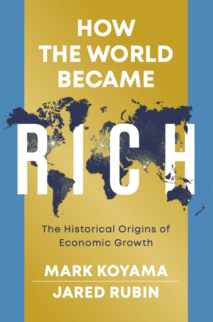
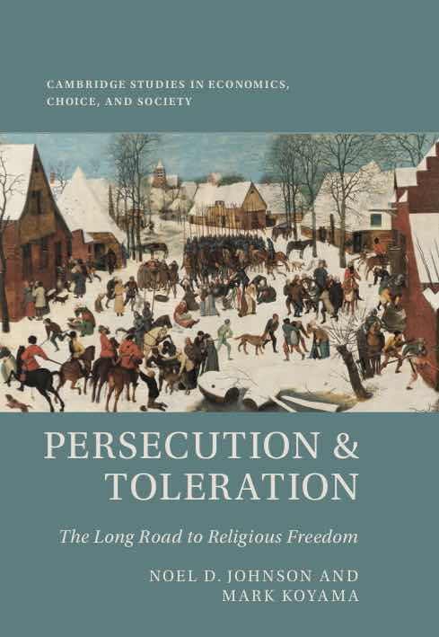

About
I am a Professor of Political Economy at the Hamilton School, University of Florida, and Co-Editor of Explorations in Economic History.
My research lies at the intersection of economic history and political economy. I study the origins of economic growth, the development of state capacity, the historical roots of religious freedom, and the political economy of medieval and early modern Europe. A full list of my published and working papers is available on the Research page.
Books
{kind=link}

How the World Became Rich
A survey of the historical origins of economic growth: why sustained prosperity emerged in some parts of the world and not others. [Order at Amazon and Amazon.co.uk]
More information and teaching materials at How the World Became Rich.
{kind=link}

Persecution and Toleration: The Long Road to Religious Freedom
Tracing the history of religious persecution from the Fall of Rome to the present day, we provide a novel economic explanation of the birth of religious liberty in the West. [Order at Amazon and Amazon.co.uk] [Website]